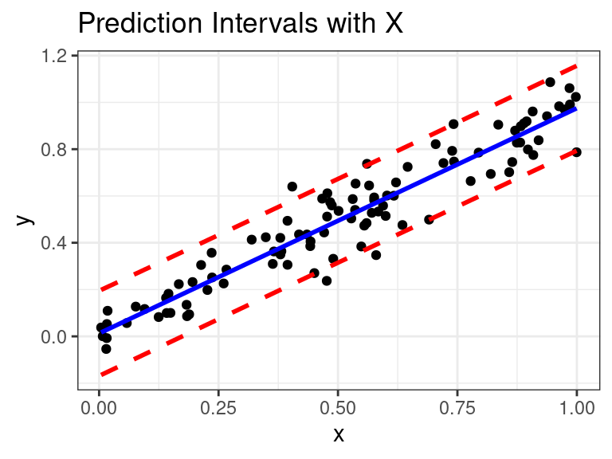
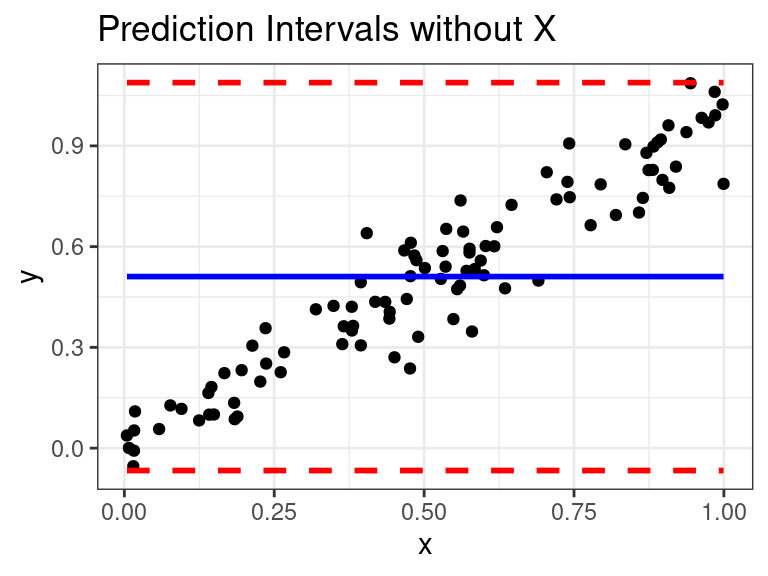

MLR: Model Selection and Validation
David Gerard
2021-11-01
Learning Objectives
- Choosing what variables to include in a model.
- Chapter 12 of Statistical Sleuth.
- Chapter 9 of KNNL
Steps of choosing a model
- Identify the key objectives.
- Screen the available variables, deciding on a list that is sensitive to the objectives and excludes obvious redundancies.
- Perform exploratory analysis, examining graphical displays and correlation coefficients.
- Perform transformations as necessary.
- Examine a residual plot after fitting a rich model, performing further transformations and considering outliers.
- Use a computer-assisted technique for finding a suitable subset of explanatory variables, exerting enough control over the process to be sensitive to the questions of interest.
- Proceed with the analysis, using the selected explanatory variables.
Step 1: Identify Objectives and Questions of Interest
Example 1: Interested in association of one explanatory variable and one response.
Goal is to determine that association after adjusting for other variables.
Then want to perform variable selection with everything except explanatory variable of interest, then include it to test for that association.
Example 2: Just want to fish for associations
Then iterate through adding/removing variables, making transformations, checking residuals, until you develop a model with significant terms and no major issues.
\(p\)-values/confidence intervals don’t have proper interpretation.
- Same problems with multiple comparisons — ran many tests and looked at data a lot to come to final model.
You generally build a model and tell stories with it.
Example 3: Prediction
- Include variables to maximize predictive power, don’t worry about interpretation.
Step 2: Screen Available Variables
Choose a list of explanatory variables that are important to the objective.
Screen out redundant variables
Problems with Including Too Few Variables
You are only picking up marginal associations.
E.g., we already know that men make more money than women. We want to see if men still make more money than women when we control for other variables.
Predictions are less accurate.


If you fit a model with \(X\), then this is what the model is seeing:

Problems with too many variables
Harder to estimate more parameters.
Formally, the variances of the sampling distributions of the coefficients in the model will get much larger.
Including highly correlated explanatory variables will really increase the variance of the sampling distributions of the coefficient estimates.
Intuitively, we are less sure if the association of \(Y\) and \(X_1\) is due to that actual associate or is it mediated through \(X_2\)?
Predictions are less accurate.
Demonstration when have too many variables
True model: \(E(Y|X_1) = X_1\)
Fit Model: \(E(Y|X_1, X_2) = \beta_0 + \beta_1 X_1 + \beta_2X_2\)
Correlation between \(X_1\) and \(X_2\) is 0.9995.
We will simulate \(Y\) and plot the resulting OLS estimates.
Black is truth

Steps 3 through 5
Exploratory data analysis.
Tons of scatterplots.
Look at correlation coefficients.
Transformations based on EDA.
Fit a rich model and look at residuals.
- Look for curvature, non-constant variance, and outliers.
Iterate the above steps until you don’t see any issues.
Step 6
If appropriate, use a computer aided technique to choose a suitable subset of explanatory variables.
Look at model criteria to compare final models.
Criteria
XYZ
Adjusted \(R^2\)
Mallows \(C_p\)
AIC and SBC
Automated Procedures
XYZ
“Best” subsets
Forward/backward stepwise methods
Step 7
Proceed with analysis with chosen explanatory variables.
Tell stories with the data using \(p\)-values, coefficient estimates, confidence intervals, etc…
Step 7 is what we’ve been discussing this whole semester.